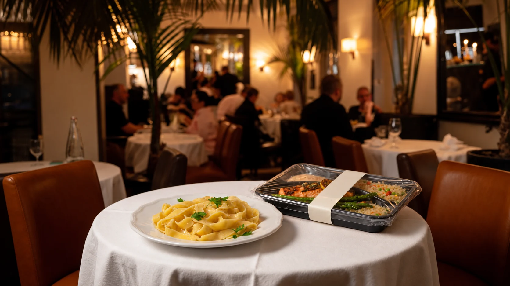

רעיון חדש לתל אביב
אותו שולחן.כל אחד בדרכו.
מנה סגורה ממטבח כשר, בתפריט של מסעדה שאינה כשרה. כדי שכולם יוכלו להישאר יחד סביב השולחן.
למה זה חשוב
ההזמנה היא להיות יחד.
לפעמים כל מה שמפריד בין אנשים סביב שולחן אחד הוא מה שמונח על הצלחת.
משפחה, חברים ובני זוג לא תמיד שומרים כשרות באותה דרך. הרעיון: לאפשר לאורח שבוחר בכך להזמין מנה סגורה ממטבח מפוקח, בלי לשנות את המטבח או את התפריט של שאר המסעדה.
הסיפור של המשפחותשלושה רגעים. שולחן אחד.
מהמטבח אל השולחן.
 הדמיה בלבד
הדמיה בלבדנוהל השירות, החימום ונוסח ההצגה לציבור טרם אושרו.
אפשרות נוספת בתפריט
המסעדה נשארת היא עצמה.
אנחנו בוחנים איך שורה אחת בתפריט יכולה לאפשר לעוד אנשים להצטרף לאותה הזמנה. אף אחת מהמסעדות שמופיעות במחקר אינה שותפה לפרויקט.
שורה אחת, בתנאים הנכונים.הפרט שקובע
סגור עד שמגיעים אליכם.
הסגירה אינה עיצוב. היא חלק משרשרת האמון שצריך להגדיר ולבדוק עם המטבח, המשגיח והמסעדה. ההדמיה התלת־ממדית מציגה את הרעיון, לא מוצר מאושר.
לפתוח תצוגת 3D360°לגעת ברעיוןExplorer le produitExplore the object
מה יש בתוך
מנה סגורה?Que contient
un plat fermé ?What is inside
a closed meal?
געו בשכבות. פס הסגירה, האריזה והמסמך הם חלקים שונים. הדגם מסביר שאלות לבדיקה; הוא אינו מוצר מאושר או תעודה אמיתית.Touchez les couches. Bande témoin, contenant et document répondent à des questions différentes. Ce schéma explique un protocole à définir ; il ne montre ni produit approuvé ni véritable certificat.Touch the layers. Tamper strip, container, and document answer different questions. This model explains a protocol still to be defined; it shows neither an approved product nor a real certificate.
להמשיך לתצוגת תלת־ממדExplorer la table en 3DExplore the table in 3DSchéma interactif du plat fermé : bande témoin, couvercle, plat, document exemple et chauffage optionnel. Aucun certificat réel.
סיפור בארבעה דפיםQuatre pages pour comprendreFour pages to understand
דף אחר דף.
אותו שולחן.Page après page.
La même table.Page by page.
One table.
דפדפו באצבע, בעכבר או בחצים. הקלפים מסבירים את הרעיון; ספרי המחקר המלאים זמינים לקריאה ולהורדה.Feuilletez au doigt, à la souris ou au clavier. Ces cartes introduisent l’idée ; les deux livres complets restent consultables et téléchargeables.Turn with a finger, mouse, or keyboard. These cards introduce the idea; both full books remain readable and downloadable.
לקרוא את הספריםLire les deux livresRead both booksQuatre cartes à feuilleter : la table, le plat, la bande de fermeture, la ligne de menu.
מעבר לארוחה
רעיונות שראויים לשיחה.
הספר, מחקר השוק ומסמכי העבודה בוחנים את ההזדמנות ואת השאלות הפתוחות. החומרים הם טיוטות עבודה; הם אינם הוכחה לשותפות או לאישור הלכתי.
לספרייהThe Kosher Option Israel